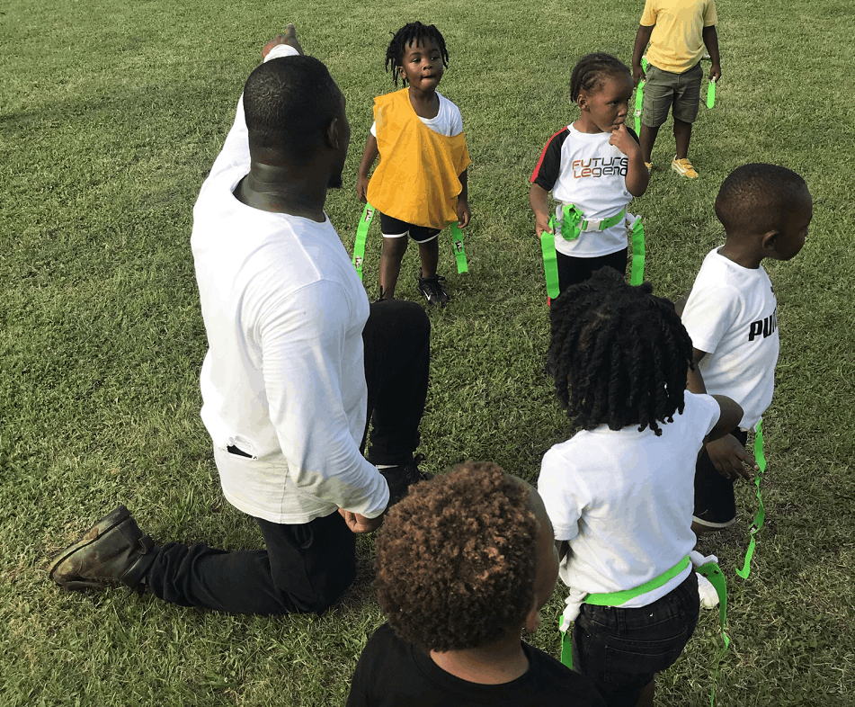

National Playmakers Academy
The Chattanooga chapter of a national program using football to build discipline, opportunity, and college pathways for student athletes.

What NPA does
National Playmakers Academy formed as a national program in 2010; Martels Carter opened the Chattanooga chapter, known locally as the "NPA Pack." It now serves student athletes from Howard, Brainerd, Tyner, Chattanooga Christian, Soddy Daisy, Hixson, Baylor, McCallie, and Orchard Knob Middle — over 100 student athletes in total.
NPA has flown more than 30 students to Las Vegas for the OT7 Cam Newton 7v7 tournament, chartered two buses of roughly 100 students to a 7v7 camp at Ford Field in Detroit, and taken more than 30 students to a Deion Sanders football camp, where two of its athletes received Division 1 offers.
Program leadership
Martels Carter
Chattanooga native and Howard High School graduate; B.S. Health and Human Performance, Austin Peay State University, where he played and coached college football. Has coached as Defensive Coordinator and Assistant Head Coach in Georgia, Kentucky, and Tennessee, and works as a Behavioral Specialist at Woodmore Elementary School.